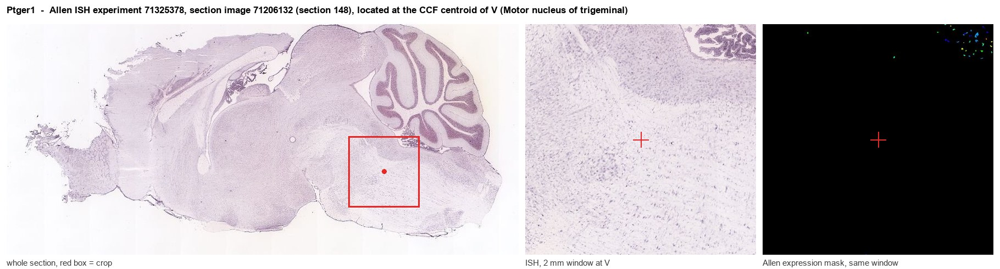
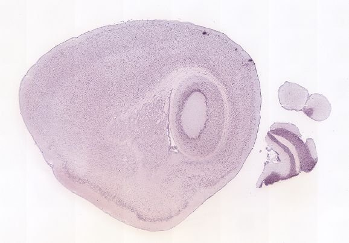
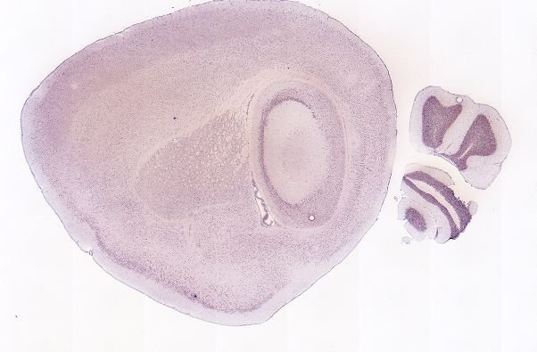
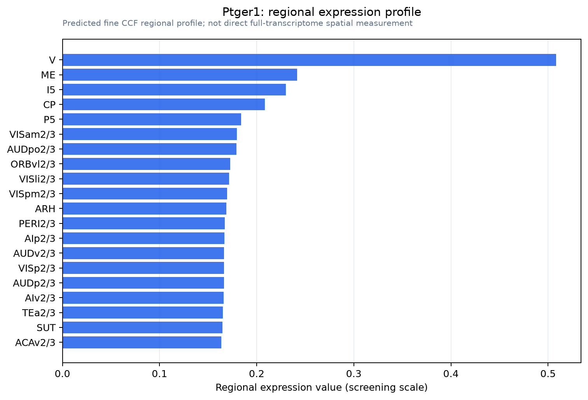

Ptger1
Prostaglandin E2 receptor EP1 subtype (PGE receptor EP1 subtype) (PGE2 receptor EP1 subtype) (Prostanoid EP1 receptor)
Spatial tier: STRICT_EXCLUSIVE · Class: GPCR · Top region: V (Motor nucleus of trigeminal) · Positive regions: 4/554
Function in V: evidence, prediction, innovation
- Gene function
- Ptger1 encodes EP1, one of four GPCRs for prostaglandin E2. EP1 couples mainly to Gq, raising calcium through phospholipase C, and directly excites target cells rather than acting through cAMP. It mediates inflammatory pain, fever responses and PGE2 modulation of dopaminergic circuits.
- Region function
- The trigeminal motor nucleus (Mo5) contains the cholinergic motoneurons driving jaw-closing (masseter, temporalis) and jaw-opening (digastric) muscles for chewing, biting and licking.
- Published in this region
- inferred No region-specific literature found. The nearest CNS motor evidence is EP-receptor mapping in spinal motor-related laminae (Kanda et al. 2021), biphasic PGE2 action on preBotzinger respiratory rhythm (Reising et al. 2022) and EP1 enhancement of GABAergic inhibition of SNc dopamine neurons (Tanaka et al. 2009).
- Predicted function
- Prediction: EP1 on Mo5 motoneurons or local interneurons is a Gq-coupled excitability gain control linking prostaglandin signalling to jaw motor output, plausibly causing sickness-related trismus, reduced chewing and altered bite force when PGE2 rises during orofacial inflammation. Ptger1 deletion or an antagonist (SC-51089, ONO-8713) should blunt PGE2-evoked masseter EMG facilitation. Global Ptger1-/- mice also show behavioural disinhibition (Matsuoka et al. 2005).
- Innovation
- ★★★★☆ 4/5 EP1 pharmacology is mature and Mo5 easy to target, yet prostaglandin signalling in trigeminal motoneurons is untested.
- Tools
- Ptger1-/- mice (Matsuoka et al. 2005); antagonists SC-51089, ONO-8713; agonists ONO-DI-004, 17-phenyl-trinor-PGE2; anti-EP1 antibodies; Mo5 access via ChAT-IRES-Cre (JAX 006410) or retrograde AAV/CTB.
- References
Direct evidence located at the region

Allen ISH experiment 71325378, section image 71206132 (section 148): the section that contains the CCF centroid of Motor nucleus of trigeminal according to the Allen image-to-atlas alignment (reference_to_image), with a 2 mm window around that point. Left: whole section, red box = window. Middle: ISH signal. Right: Allen's expression-mask view of the same window. open this image in the Allen viewer
Direct spatial evidence



Regional expression figure

Predicted WMB × fine-CCF profile; not direct full-transcriptome spatial measurement.
Spatial profile
Evidence and specificity
- Evidence status
- PREDICTED_FINE
- Direct sources
- None; predicted localization only
- Exclusive threshold
- 12 positive regions out of 554
- Spatial specificity
- 0.330
- Top-region fraction
- 0.147
- Filter status
- PASS
Interpretation limits
- Cell-type-to-region projection is imputed expression, not direct spatial measurement.
- Adult reference atlases do not establish stability across age, sex, strain, state, or disease.
- Transcript abundance does not guarantee protein abundance or genetic-tool performance.